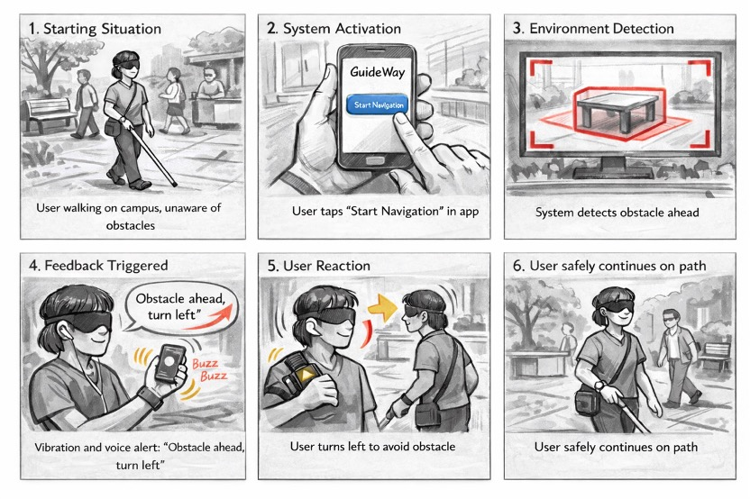

Storyboard
6-Panel User Journey

01Starting Situation
User walks on campus and is unaware of obstacles.
02System Activation
User taps Start Navigation in the app.
03Environment Detection
The system scans and identifies an obstacle.
04Feedback Triggered
Voice and vibration warn the user to turn left.
05User Reaction
The user turns left to avoid the obstacle.
06Safe Continuation
The user continues safely along the path.